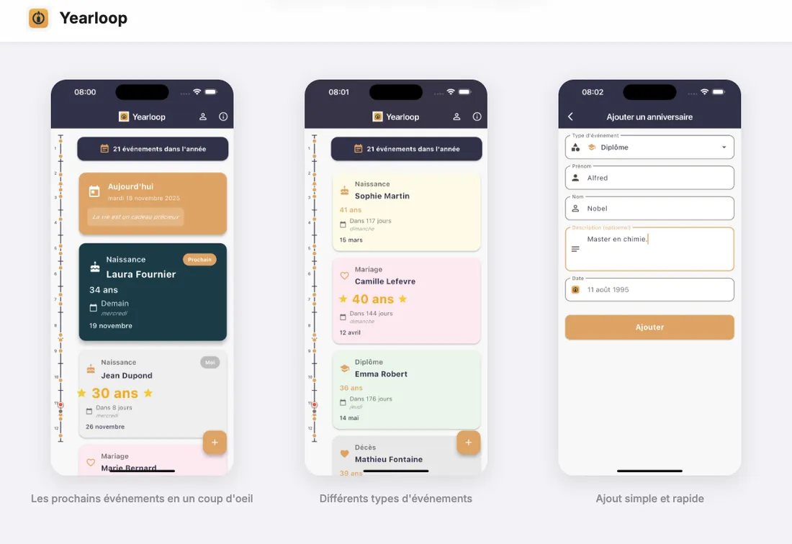

Produit 0xLabs · App mobile iOS
N'oubliez plus aucun anniversaire ni événement marquant.
Bientôt
Yearloop garde tous vos événements importants de l'année au même endroit, en un coup d'œil. Ultra simple : visualisez le prochain événement et dans combien de jours. Anniversaires, mariages, diplômes… tout y est.
Interface intuitive ultra simple
Vue d'ensemble de tous vos événements annuels
100 % privé — données stockées localement
Sans limites d'événements
Import / export pour sauvegarder vos données
Tous types d'événements supportés

N'oubliez plus aucun anniversaire ni événement marquant.